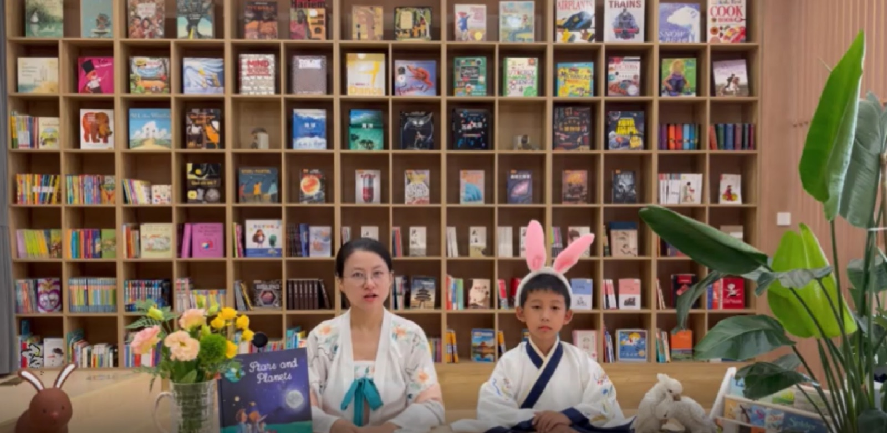

2019 年
江湾城儿童阅读中心落成
20,000+ 册
英文原版藏书，四大阅读领域
8 阶段
M0–M7，2 岁到 12 岁
10,000+ 人次
参与慕识书展、讲座与公益阅读会
Methods · 教育理念
阅读，推动全能力
慕识以“差异化指导阅读”为核心方法：读者以自己的选择来阅读，以自己的速度来阅读， 并与人讨论、分享阅读心得、聚焦一些阅读能力或者重要概念的培养。
同一本书，我们提取不同的兴趣点与切入角度；视觉、听觉与动觉充分融入课堂， 孩子有大量机会参加小组讨论、展示、活动与游戏，调动多种感官协同学习。

不标尺化
依据多元智能匹配读物
人的智能包含运动、逻辑、空间、内省、自然、人际、语言与音乐八种。我们为每个孩子匹配与其兴趣和语言水平相符的读物。
「让孩子变智慧的方法，是阅读、阅读、再阅读。」
— 瓦·阿·苏霍姆林斯基

Curriculum · 课程体系
体系课与素养课
慕识使用美国国家地理学习（NGL）等原版资源，通过 M0–M7 八个级别、三个阶段的课程进阶， 帮助孩子掌握高阶英语阅读能力；同时提供多类素养课程，补充单项能力与兴趣广度。
体系课 · 三个阶段，八个级别
兴趣与共读 · 启蒙段
M0M1
- 目标愿意听、愿意看、愿意回应，围绕熟悉主题用完整句表达
- 节奏45–60 分钟 / 次，每周 2–3 次
- 里程碑语音与意义启蒙 → Pre-A1 起步
拼读与理解 · 进阶段
M2M3M4
- 目标从“能读出来”走向“能读懂”，比较因果、提炼主题并写成段落
- 节奏90 分钟 / 次，每周 2 次，约 1 学年 / 阶
- 里程碑Pre-A1 稳固 → A1 起步 → A1 稳固
学术与思辨 · 高阶段
M5M6M7
- 目标从文本找证据、跨文本综合、独立研究并清晰表达
- 节奏90–105 分钟 / 次，每周 2 次，约 30 教学周 / 阶
- 里程碑A1 学术过渡 → A2 → B1
级别明细
M0
M1
M2
M3
M4
M5
M6
M7
* M5–M7 按“每阶 10 个单元、每单元约 6 次课”测算：约 60 课次 / 30 教学周 / 90–105 小时； 最终以实际单元数与达标速度为准。年龄为建议区间，起点由测评与作品证据决定。
素养课 · 八类课程，补单项能力与兴趣广度
01
自然科学阅读
依托美国国家地理学习系列，围绕地球、生命与物理科学做主题阅读。
02
假期分级阅读包
近千册 NGL 读物，按丛书原生分级匹配认知水平，假期集中进阶。
03
少儿编程
启蒙（Scratch）、应用（Python）、算法（C++ 与数据结构）、竞赛训练营。
04
AI 设计课
让孩子亲手设计属于自己的 AI 学习助手，理解技术如何改变学习方式。
05
英文烘焙营
在原版课堂里做出真实的美味饼干，沉浸式英文任务与合作。
06
环球阅读之旅
三十个国家，一天一个国家，跟随阅读踏上奇妙的环球之旅。
07
读者剧场
用表演的方式讲故事，情感表现与情景表演同时发生。
08
亲子科考营
与科学家、冰川学者一起探索冰川奥秘；联合美国西北大学 CTD 少年营。
Space · 空间
空间与荣誉
两万余册藏书，一座会亮起来的白色书塔
 阅读空间
阅读空间 阅读桌与自然光
阅读桌与自然光 书架与阅读角
书架与阅读角 阅读室
阅读室 共享阅读区
共享阅读区 空间的曲线
空间的曲线
FAQ · 家长问答
报名前，家长最关心的几件事
孩子完全没有基础，可以来吗？
可以。M0–M1 阶段专门为 2–5 岁、几乎没有英文阅读经验的孩子设计，重点是兴趣、语音与意义的连接，不要求纸笔与背诵。
课程和学校的英语课有什么不同？
学校课以教材进度为主，慕识以真实原版读物的阅读能力为主。我们用陌生文本、拼读迁移和作品档案检验孩子“是否真正会用”，而不是只看做题正确率。
一个班多少人？老师怎么配？
以小班与一对一指导为主，按阅读能力分组，而非只按年龄分班。具体班级人数与导师配置以到访时的课程说明为准。
怎么知道孩子真的进步了？
看四类证据：读得懂、说得清、写得出、换一篇也会用。我们会保存前后两次录音、阅读回答与代表写作，并在阶段复盘时与家长一起看。
年龄到了就要升阶吗？
不一定。年龄决定内容与课堂组织是否适切；阅读能力、语言状态、心理准备与独立性共同决定起点。跳级或加速必须由陌生文本和作品证据支持。
Booking · 免费预约
预约一次到访，先看清孩子的起点
一次到访约 60 分钟：孩子做一次原版阅读体验，家长与导师面谈 15 分钟，当天给出起点建议。
或直接致电 025-85710168 · 180 6168 1356